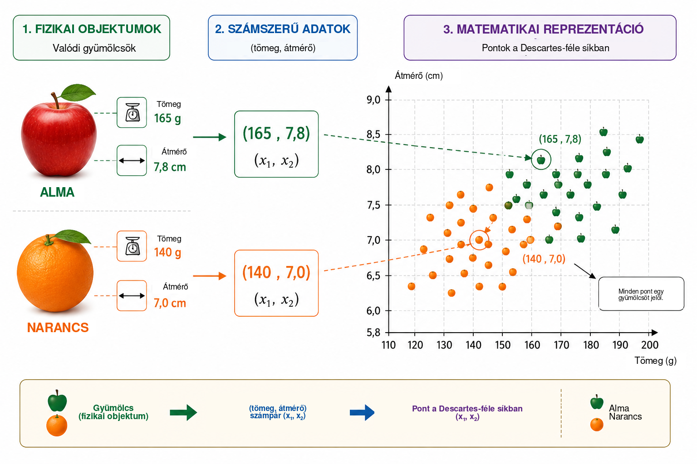
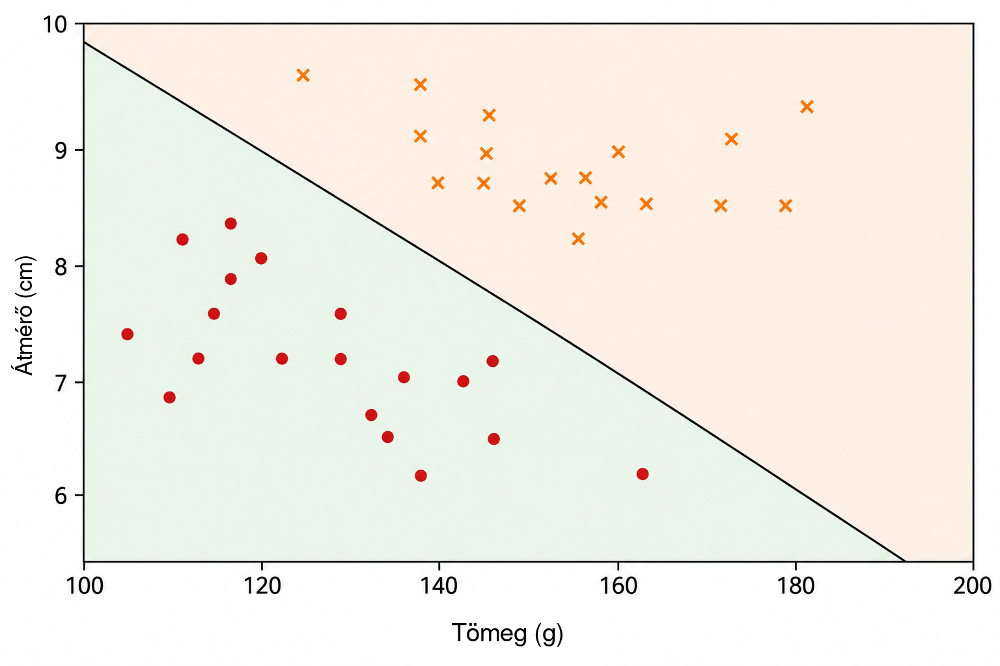
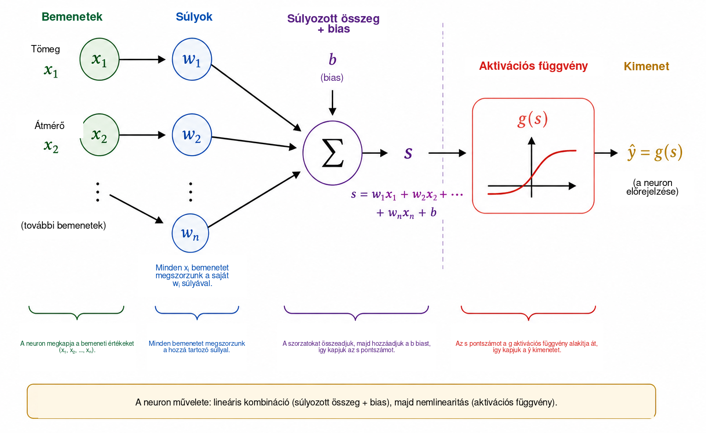
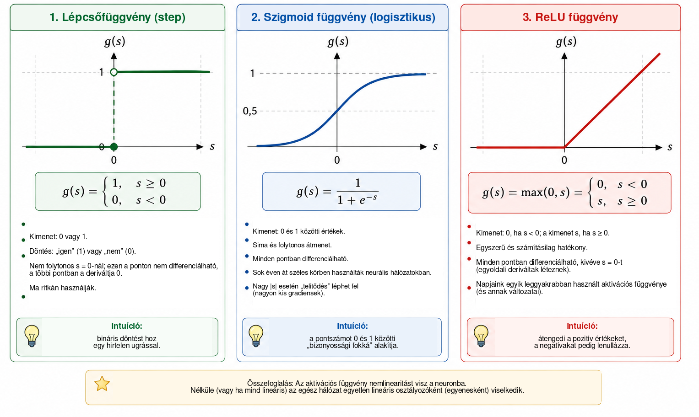
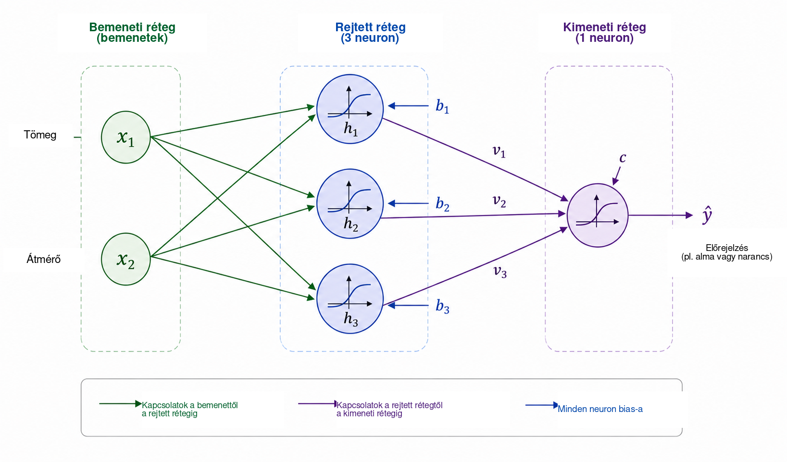
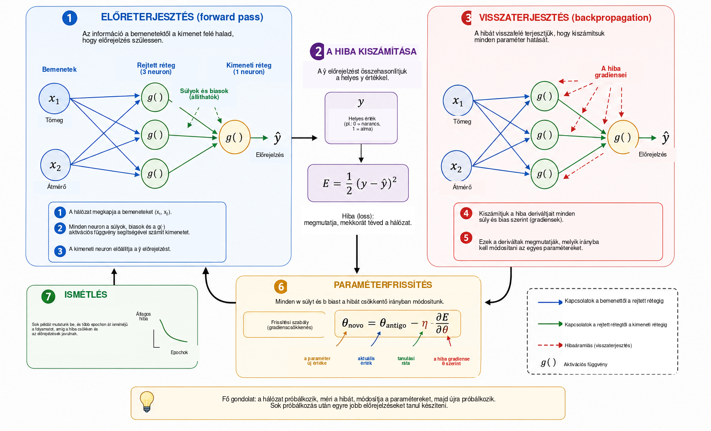
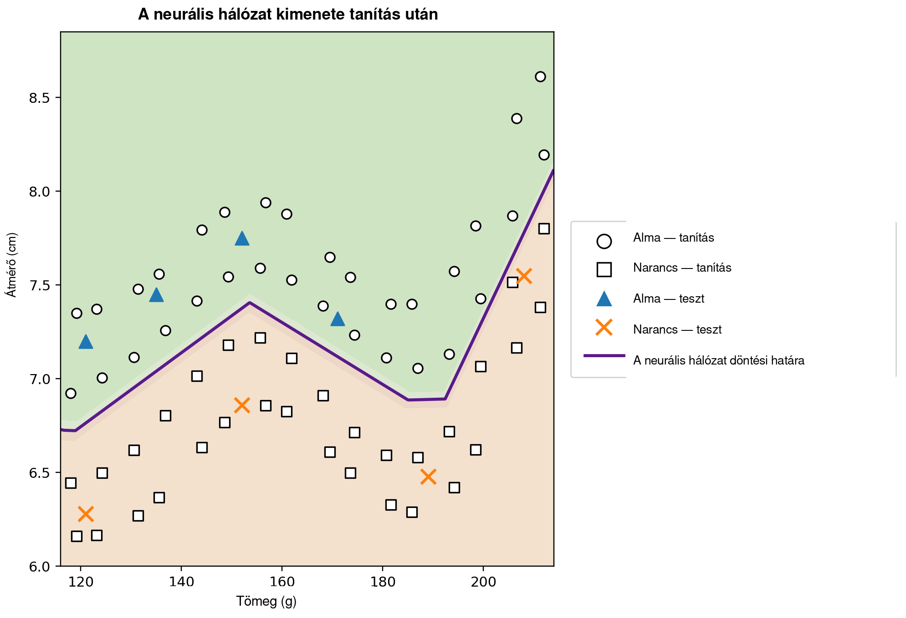

Mikor képes tanulni egy számítógép?
A mindennapi életben szinte észrevétlenül hozunk osztályozási döntéseket. Ha ránézünk egy gyümölcsre, gyorsan felismerjük, hogy alma vagy narancs; amikor üzenet érkezik a telefonunkra, megkülönböztetjük a valódi kommunikációt a kéretlen reklámtól; orvosi elemzésben több mérés együtt támogathat egy döntést; pénzügyi intézményekben pedig számos információt értékelnek a hitelnyújtás előtt. Mindezekben a példákban egyszerre több jellemzőt veszünk figyelembe egy válasz előállításához.
Sok hagyományos számítógépes programban az ilyen válaszhoz vezető szabályokat a programozó kifejezetten megadja. Ez a megközelítés jól működik, ha a szabályok ismertek és világosan megfogalmazhatók. Kevésbé hatékony azonban akkor, amikor az adatok nagyon változatosak, vagy amikor nehéz előre felsorolni egy jó döntéshez szükséges összes feltételt. Ez természetes kérdéshez vezet:
Készíthetünk-e olyan programot, amely példákból tanulja meg a döntési szabályt ahelyett, hogy azt előre megkapná?
Ez a gépi tanulás egyik központi gondolata, amely a mesterséges intelligencia azon területe, amely adatokból illesztett modellekkel foglalkozik . Felügyelt tanulási feladatban az algoritmus példákat kap a hozzájuk tartozó helyes válaszokkal együtt, és olyan modellt keresünk, amely a tanítás során nem használt esetekre is hasznos előrejelzéseket ad. Az erre a célra kidolgozott sok modell közül különösen jelentőssé váltak a mesterséges neurális hálózatok, amelyeket többek között képfelismerésben, nyelvfeldolgozásban, jelelemzésben és idősor-előrejelzésben alkalmaznak .
A neurális hálózatoknak a matematika, a számítástechnika és az iskolai oktatás közötti hídként való használatát Batista és Martins már tárgyalták a Professor de Matemática Online folyóiratban ; munkájuk tanárképzéssel, Pythonnal és számjegyfelismeréssel kapcsolatos tevékenységet mutat be. Jelen cikk kiegészítő megközelítést követ. Fő célunk egy kis neurális hálózat belső matematikájának feltárása: az analitikus geometriától indulunk, majd lépésről lépésre eljutunk a gradiens kiszámításáig és a visszaterjesztés kézi megvalósításáig.
A modern alkalmazások kifinomultsága ellenére a neurális hálózat matematikai magja viszonylag ismert fogalmakkal is bevezethető. Alapszinten a neurális hálózat olyan függvények kompozíciója, amelyek paramétereit adatok alapján állítjuk be. Egy egyszerű geometriai problémával kezdünk, az elválasztó egyenest mesterséges neuronként értelmezzük újra, több neuront összekapcsolunk, megvizsgáljuk az aktivációs függvények szerepét, és megmutatjuk, miként használhatók a deriváltak a hálózat paramétereinek automatikus módosítására. Ezután egy teljes, kisméretű példát valósítunk meg Pythonban, közvetlen megfelelést tartva fenn az egyenletek és a kód között.
A probléma matematikai reprezentációja
A neurális hálózat működésének megértéséhez szándékosan egyszerű problémával kezdünk: almák és narancsok megkülönböztetésével. Egy gyümölcsnek sok olyan tulajdonsága van, amely hasznos lehet ehhez a feladathoz, például a színe, tömege, átmérője, felülete vagy illata. Egy kezdeti matematikai modellnek azonban nem kell ezt a teljes összetettséget tartalmaznia. Mindössze két könnyen mérhető mennyiséget használunk: a tömeget grammban és az átmérőt centiméterben.
Minden gyümölcsöt tehát egy rendezett párral reprezentálunk: \[(x_1,x_2),\] ahol \[x_1=\text{tömeg} \qquad\text{és}\qquad x_2=\text{átmérő}.\]
Így a \((155,\;7.2)\) pár egy \(155\) g tömegű és \(7.2\) cm átmérőjű gyümölcsöt jelent. A fizikai objektumot két számszerű mérésre cserélve minden gyümölcshöz egy pontot rendelünk a Descartes-féle síkban: az első koordináta a tömeg, a második az átmérő. Az 1. ábra ezt a reprezentációt szemlélteti almák és narancsok hipotetikus halmazán.

Ez az átalakítás megváltoztatja a probléma látszólagos természetét. Ahelyett, hogy közvetlenül azt kérdeznénk, miként ismerhető fel egy alma vagy narancs, geometriai kérdést tehetünk fel: hogyan választhatók szét a két osztályhoz tartozó pontok a síkban? Ez a nézőpontváltás alapvető a gépi tanulásban. A képeket, szövegeket, hangokat és kísérleti jeleket számszerű reprezentációvá kell alakítani, mielőtt egy algoritmus feldolgozhatná őket. Példánkban minden objektumnak csak két koordinátája van; valós alkalmazásokban egy reprezentáció több száz, több ezer vagy akár több millió komponensből is állhat. Az elv ugyanaz: minden példához számok egy gyűjteményét rendeljük, a modell pedig olyan szabályt keres, amely ezt a reprezentációt a kívánt válaszhoz rendeli.
A legegyszerűbb rendelkezésre álló geometriai szabállyal kezdünk, és megkérdezzük, hogy egyetlen egyenes képes-e megfelelően elválasztani az almákhoz tartozó pontokat a narancsokhoz tartozó pontoktól.
Az egyenes mint osztályozó
Miután minden gyümölcsöt pontként ábrázoltunk a Descartes-féle síkban, az osztályozás geometriai problémává válik: el tudja-e választani egy egyenes az almákat a narancsoktól? Ez a kérdés megragadja a gépi tanulás egy fontos módszercsaládjának, a lineáris osztályozóknak az alapötletét.
Tekintsünk egy, az adatfelhőt metsző egyenest, ahogy az 2. ábra mutatja. Az egyenes két félsíkra osztja a síkot. Ha az almákhoz tartozó pontok többsége az egyik oldalon, a narancsokhoz tartozó pontok többsége pedig a másikon helyezkedik el, akkor egy új gyümölcs egyeneshez viszonyított helyzete osztályozási szabályként használható. Tömegének és átmérőjének megmérése után a gyümölcsöt pontként ábrázoljuk, majd meghatározzuk, hogy az egyenes melyik oldalán fekszik.

A \((x_1,x_2)\) Descartes-féle síkban egy egyenes felírható \[w_1x_1+w_2x_2+b=0, \qquad (w_1,w_2)\neq(0,0).\]
A \((w_1,w_2)\) vektor merőleges az egyenesre, ezért meghatározza annak irányát, míg a \(b\) paraméter a helyzetét befolyásolja. Ez a reprezentáció kis redundanciát tartalmaz: \(w_1\), \(w_2\) és \(b\) ugyanazzal a nemnulla konstanssal történő megszorzása pontosan ugyanazt az egyenest adja. A határt leíró paraméterek ezért nem egyértelműek. Számszerű értelmezésük a változók skálájától is függ. Mivel a tömeget grammban, az átmérőt centiméterben mérjük, \(w_1\) és \(w_2\) számszerű nagysága nem hasonlítható közvetlenül össze a különböző mértékegységek figyelembevétele nélkül.
Az egyenes egyenlete egyszerű módot ad annak eldöntésére, hogy egy pont a határ melyik oldalán található. Definiáljuk a pontszámot: \[s(x_1,x_2)=w_1x_1+w_2x_2+b.\]
Ha \(s(x_1,x_2)=0\), a pont az egyenesen fekszik. Ha \(s(x_1,x_2)>0\), az egyik félsíkban, ha \(s(x_1,x_2)<0\), a másikban helyezkedik el. Ha úgy döntünk, hogy a pozitív pontszámok az almáknak, a negatívak pedig a narancsoknak felelnek meg, akkor a szabály: \[\begin{cases} s(x_1,x_2)\geq 0 & \Longrightarrow \text{alma},\\ s(x_1,x_2)<0 & \Longrightarrow \text{narancs}. \end{cases}\]
Például tekintsük a következő határt: \[w_1=\frac{1}{10}, \qquad w_2=2, \qquad b=-30.\] Egy \(160\) g tömegű és \(7.8\) cm átmérőjű gyümölcs esetén \[\begin{aligned} s &=\frac{1}{10}\times160+2\times7.8-30\\ &=16+15.6-30\\ &=1.6. \end{aligned}\] Mivel a pontszám pozitív, a pont abban a félsíkban van, amelyet az almákhoz társítottunk. Az osztályozó tehát almának címkézné ezt a gyümölcsöt.
Nem minden \(w_1\), \(w_2\) és \(b\) választás eredményez jó osztályozást. Egyes egyenesek rosszul választják szét a két csoportot, míg mások kevesebb hibát okoznak. A tanulási feladat éppen az, hogy korábban címkézett példák segítségével olyan paraméterértékeket határozzunk meg, amelyek csökkentik a modell hibájának valamilyen mértékét. Ahelyett, hogy közvetlenül beprogramoznánk az egyenes helyzetét, azt szeretnénk, hogy az algoritmus az adatok alapján állítsa be az együtthatókat.
Egyetlen egyenes jól működhet, ha az osztályok közel lineárisan szeparálhatók. Összetettebb adathalmazok nemlineáris határt igényelhetnek. Mielőtt ezzel a korláttal foglalkoznánk, az imént létrehozott osztályozót elemi számítási egységként értelmezzük újra: mesterséges neuronként.
A mesterséges neuron
Az előző részben az \[s=w_1x_1+w_2x_2+b\] kifejezést annak meghatározására használtuk, hogy egy gyümölcs az egyenes melyik oldalán található. Ugyanez a kifejezés tekinthető a mesterséges neuron által végzett számítás első lépésének. A neuron számszerű bemeneteket kap, súlyok és eltolás segítségével kombinálja őket, majd egy matematikai függvényt alkalmaz a kimenet előállításához.
Példánkban a bemenetek a tömeg \(x_1\) és az átmérő \(x_2\). Minden bemenetet megszorzunk egy súlynak nevezett paraméterrel; a szorzatokat összeadjuk egy \(b\) konstans taggal, amelyet biasnak (eltolásnak) nevezünk. Az 3. ábra sematikusan mutatja ezt a számítást.

A súlyok határozzák meg, hogyan befolyásolják a bemenetek változásai a pontszámot. Ha \(x_2\)-t és minden más mennyiséget rögzítünk, akkor \(\Delta x_1\) változás \(w_1\Delta x_1\) értékkel módosítja \(s\)-t. Hasonlóan, \(\Delta x_2\) változás \(w_2\Delta x_2\) értékkel módosítja a pontszámot. Az előjel is számít: pozitív súly esetén a bemenet növekedése növeli a pontszámot, negatív súly pedig az ellenkező hatást váltja ki. Ezt az értelmezést óvatosan kell használni, ha a változók különböző mértékegységekkel és skálákkal rendelkeznek. Emiatt gyakorlati megvalósításokban a bemeneti adatokat tanítás előtt gyakran normalizálják vagy standardizálják.
A \(b\) bias az affin transzformáció konstans tagja. Geometriailag lehetővé teszi a döntési határ eltolását. Ha \(b=0\), akkor \[w_1x_1+w_2x_2=0\] az egyenest arra kényszeríti, hogy átmenjen az origón. Bias jelenlétében a határ más helyre tolható. Ezzel ekvivalensen, ha \(x_1=x_2=0\), akkor a pontszám egyszerűen \(s=b\).
A pontszámnak nem kell a neuron végső kimenetének lennie. Általában egy \(g\) aktivációs függvényt alkalmazunk rá: \[\widehat{y}=g(s)=g\left(w_1x_1+w_2x_2+b\right).\] A számítás tehát két lépésből áll: \[\begin{aligned} s &= w_1x_1+w_2x_2+b,\\[4pt] \widehat{y} &= g(s). \end{aligned}\]
Az előző rész paraméterértékeivel \(s=1.6\). Ha a lépcsőfüggvényt választjuk, \[g(s)= \begin{cases} 1, & s\geq0,\\ 0, & s<0, \end{cases}\] akkor \(\widehat{y}=g(1.6)=1\). Konvenciónk szerint a gyümölcsöt almának osztályozzuk. Ennél az aktivációnál a döntés akkor változik, amikor \(s\) áthalad a nullán, ezért az osztályhatárt pontosan \[w_1x_1+w_2x_2+b=0\] adja.
Egyetlen neuron tehát egyszerű matematikai objektum állítható paraméterekkel. Valódi jelentősége akkor jelenik meg, amikor sok ilyen egységet összekapcsolunk. A hálózat felépítése előtt azonban meg kell értenünk, miért nélkülözhetetlen az aktivációs függvény.
Miért van szükség aktivációs függvényre?
A neuron először affin transzformációval kiszámít egy pontszámot, és csak ezután alkalmaz aktivációs függvényt. Ez a második lépés nélkülözhetetlen ahhoz, hogy a neurális hálózat bonyolult kapcsolatokat tudjon reprezentálni. Ennek megértéséhez képzeljünk el egy olyan hálózatot, amelyben egyáltalán nem használunk aktivációs függvényeket. Ekkor minden egység alakja \[y=w_1x_1+w_2x_2+b.\]
Egydimenziós szemléltetésként tegyük fel, hogy az első egység \[h=ax+b\] értéket állít elő, a második pedig \[y=ch+d\] értéket számít. Behelyettesítéssel \[y=c(ax+b)+d=acx+(cb+d),\] ami továbbra is affin függvénye \(x\)-nek. Ugyanez igaz több dimenzióban is: affin transzformációk kompozíciója továbbra is affin. Ezért sok réteg hozzáadása nemlineáris művelet nélkül nem teszi a hálózatot alapvetően kifejezőbbé; az egész kompozíció helyettesíthető egyetlen affin transzformációval.
Az aktivációs függvény megszünteti ezt a korlátot. Az \(s\) pontszám kiszámítása után a neuron egy általában nemlineáris leképezést alkalmaz: \[h=g(s).\] Ha több ilyen egységet összekapcsolunk, az eredő kompozíció már nem redukálható egyetlen affin transzformációra. Ez teszi lehetővé bonyolultabb döntési határok felépítését.
A legegyszerűbb aktiváció a lépcsőfüggvény, \[g(s)= \begin{cases} 1, & s\geq0,\\ 0, & s<0. \end{cases}\] Bináris döntést állít elő, ezért kiváló az osztályozás megértéséhez. Deriváltja azonban \(s\neq0\) esetén nulla, \(s=0\)-nál pedig nem létezik. Mivel a gradiensalapú tanítás deriváltakat használ annak meghatározására, hogyan változzanak a paraméterek, a lépcsőfüggvény nem alkalmas erre a tanítási mechanizmusra.
Egy alternatíva a szigmoid függvény, \[\sigma(s)=\frac{1}{1+e^{-s}}.\] Minden valós számot szigorúan \(0\) és \(1\) közötti értékre képez. Nagyon negatív \(s\) esetén a kimenet \(0\)-hoz, nagyon pozitív \(s\) esetén \(1\)-hez közelít; a kettő között az átmenet sima. A szigmoid mindenütt differenciálható, és \[\sigma'(s)=\sigma(s)\bigl(1-\sigma(s)\bigr).\] Mivel kimenetei \(0\) és \(1\) között vannak, gyakran használják bináris osztályozók kimeneti rétegében. Megfelelő veszteségfüggvénnyel együtt, valószínűségi megfogalmazásban a kimenet az \(1\)-gyel jelölt osztály valószínűségének becsléseként értelmezhető. Rejtett rétegekben azonban a szigmoid nehézséget okozhat: nagy abszolútértékű bemeneteknél a deriváltja nagyon kicsivé válik, ami hozzájárul a mély hálózatok eltűnő gradiens problémájához.
Gyakran használt rejtettréteg-aktiváció a ReLU (Rectified Linear Unit), \[\text{ReLU}(s)=\text{max}(0,s) = \begin{cases} 0, & s<0,\\ s, & s\geq0. \end{cases}\] Bár két lineáris szakaszból áll, a ReLU globálisan nem lineáris. Deriváltja \(0\) \(s<0\) esetén és \(1\) \(s>0\) esetén. \(s=0\)-nál a szokásos derivált nem létezik, ezért a szoftveres megvalósítások valamilyen konvenciót használnak a gradiensre. Pozitív bemeneteknél a derivált nem csökken \(s\) növekedésével, így elkerülhető a szigmoid egyik telítődési mechanizmusa.
A 4. ábra vizuálisan hasonlítja össze ezt a három aktivációt: a lépcsőfüggvény hirtelen ugrását, a szigmoid sima átmenetét és a ReLU meredekségváltozását.

Fő tulajdonságaikat az alábbi táblázat foglalja össze.
| Függvény | Kimenet | Derivált | Tipikus használat |
|---|---|---|---|
| Lépcső | \(\{0,1\}\) | Nulla \(s\neq0\) esetén; \(s=0\)-nál nem létezik | Történeti modellek és didaktikai példák |
| Szigmoid | \((0,1)\) | Minden \(s\) esetén létezik | Bináris osztályozás kimeneti rétege |
| ReLU | \([0,\infty)\) | \(0\) \(s<0\) esetén és \(1\) \(s>0\) esetén | Rejtett rétegek |
E függvények részletei eltérnek, de közös fogalmi szerepük a nemlinearitás bevezetése. Ez a nemlinearitás teszi lehetővé, hogy a következő rész kis hálózata olyan kapcsolatokat is reprezentáljon, amelyeket egyetlen egyenes nem tud megragadni.
A továbblépni kívánó olvasóknak Haykin klasszikus tárgyalást ad a neurális hálózatokról, míg Goodfellow, Bengio és Courville tágabb összefüggésben ismertetik az aktivációs függvényeket és a mély hálózatok tanítását. Nielsen szabadon hozzáférhető könyve különösen jól használható a neuronokkal, aktivációkkal és tanulással kapcsolatos intuíció kialakításához.
Egy kis neurális hálózat felépítése
Most olyan hálózatot tekintünk, amelynek két bemenete, egy három neuront tartalmazó rejtett rétege és egy kimeneti neuronja van. A bemenetek továbbra is \[x_1=\text{tömeg}, \qquad x_2=\text{átmérő},\] és mindkettőt minden rejtett neuron megkapja, ahogy az 5. ábra mutatja.

Jelölje a rejtett réteg kimeneteit \(h_1\), \(h_2\) és \(h_3\). Mindegyik neuron ugyanazt a két bemenetet kapja, de saját súlyokkal és bias-szal rendelkezik: \[\begin{aligned} h_1&=g\left(w_{11}x_1+w_{12}x_2+b_1\right),\\[4pt] h_2&=g\left(w_{21}x_1+w_{22}x_2+b_2\right),\\[4pt] h_3&=g\left(w_{31}x_1+w_{32}x_2+b_3\right). \end{aligned}\]
Bár mindhárom neuron ugyanazt a tömeget és átmérőt kapja, paramétereik különbözősége miatt eltérő válaszokat adhatnak. A tanítás során ezeket a paramétereket úgy módosítjuk, hogy a köztes aktivációk hasznosak legyenek az osztályozás szempontjából.
A három \(h_1\), \(h_2\) és \(h_3\) mennyiség ezután a kimeneti neuronhoz kerül, amely \[s_{\mathrm{out}}=v_1h_1+v_2h_2+v_3h_3+c\] értéket számít, majd \[\widehat{y}=g_{\mathrm{out}}\left(s_{\mathrm{out}}\right)\] kimenetet állít elő. Bináris problémánkhoz szigmoid kimenetet használunk: \[\widehat{y}=\sigma\left(v_1h_1+v_2h_2+v_3h_3+c\right), \qquad 0<\widehat{y}<1.\]
Ha az almára \(y=1\), a narancsra \(y=0\) jelölést használunk, akkor a \(0.5\) küszöb az alábbi osztálydöntést adja: \[\widehat{y}\geq0.5 \Longrightarrow \text{alma}, \qquad \widehat{y}<0.5 \Longrightarrow \text{narancs}.\] Az \(1\)-hez közeli értékek tehát erősen az almához, a \(0\)-hoz közeli értékek a narancshoz társulnak. Ahogy korábban megjegyeztük, \(\widehat{y}\) valószínűségként való számszerű értelmezéséhez további feltételezések szükségesek a modellről és annak tanításáról. Az itt használt osztályozási szabályhoz elegendő \(\widehat{y}\)-t a hálózat folytonos kimeneteként tekinteni.
Az architektúra központi eleme a köztes reprezentáció: \[(x_1,x_2) \longrightarrow (h_1,h_2,h_3) \longrightarrow \widehat{y}.\] A hálózat két jellemzőt kap, és három új mennyiséget épít fel a végső válasz előállítása előtt. Ezeket az aktivációkat nem kézzel választjuk: a súlyoktól és biasoktól függenek, ezért a paraméterek tanításával együtt változnak.
Kis mérete ellenére a hálózat már tizenhárom állítható paraméterrel rendelkezik. A három rejtett neuronban \[3(2+1)=9\] paraméter található, a kimeneti neuron pedig \[3+1=4\] paramétert ad hozzá. Tehát \[9+4=13.\]
Ugyanez a számlálás mátrixos jelölésben is átlátható. Definiáljuk \[\mathbf{x}= \begin{bmatrix} x_1\\x_2 \end{bmatrix}, \qquad W^{(1)}= \begin{bmatrix} w_{11}&w_{12}\\ w_{21}&w_{22}\\ w_{31}&w_{32} \end{bmatrix}, \qquad \mathbf{b}^{(1)}= \begin{bmatrix} b_1\\b_2\\b_3 \end{bmatrix}.\] Ekkor a rejtett réteg tömören így írható: \[\mathbf{h}=g\left(W^{(1)}\mathbf{x}+\mathbf{b}^{(1)}\right),\] ahol \(g\) komponensenként hat. A kimenetre \[\widehat{y} = \sigma\left(W^{(2)}\mathbf{h}+b^{(2)}\right),\] ahol \[W^{(2)}= \begin{bmatrix} v_1&v_2&v_3 \end{bmatrix}.\]
Ez a jelölés előrevetíti a Python-program szerkezetét. Amikor egy gyümölcsöt a bemenetre adunk, és egymás után kiszámítjuk az aktivációkat egészen \(\widehat{y}\)-ig, előreterjesztést (forward pass) végzünk. A központi kérdés továbbra is az: hogyan határozható meg automatikusan a tizenhárom paraméter úgy, hogy az előrejelzések illeszkedjenek az adatokhoz?
Hogyan tanul egy neurális hálózat?
A súlyok és biasok előre nem ismertek. Olyan példák segítségével kell őket beállítani, amelyeknél a helyes válasz rendelkezésre áll. Ezt a folyamatot tanításnak nevezzük, és az alábbi ciklussal foglalhatjuk össze: \[\boxed{\text{előrejelzés}} \longrightarrow \boxed{\text{hiba mérése}} \longrightarrow \boxed{\text{paraméterek módosítása}} \longrightarrow \boxed{\text{ismétlés}}.\]
Tekintsünk egy \(140\) g tömegű és \(7.0\) cm átmérőjű gyümölcsöt, amelynek helyes osztálya narancs, tehát \(y=0\). Tegyük fel, hogy a tanítás egy pontján a hálózat \(\widehat{y}=0.80\) kimenetet ad. Az előrejelzés és a cél közötti eltérés egyik egyszerű mértéke a négyzetes hiba: \[E=\frac{1}{2}\left(y-\widehat{y}\right)^2.\] Ebben a példában \[E=\frac{1}{2}(0-0.80)^2=0.32.\]
Ez a kifejezés egyetlen példához tartozó veszteségfüggvény. Mivel négyzet, \(E\geq0\), és a céltól távolabb eső előrejelzések nagyobb büntetést kapnak. Az \(1/2\) tényező nem változtatja meg a minimum helyét, de egyszerűsíti a deriváltakat. Bináris osztályozásban gyakran más veszteségeket, különösen keresztentrópiát használnak. Itt a négyzetes hibát választjuk, mert algebrája átlátható és elegendő az optimalizálás és a visszaterjesztés bevezetéséhez .
Ha a tanítóhalmaz \(N\) példát tartalmaz, egy globális mérték az átlagos veszteség: \[J=\frac{1}{N}\sum_{i=1}^{N}E_i.\] Minden előrejelzés függ a hálózat súlyaitól és biasaitól, így \(J\) is függ valamennyi paramétertől. A tanítás azt jelenti, hogy olyan paraméterértékeket keresünk, amelyek mellett \(J\) kicsi.
A módosítás mechanizmusának megértéséhez először képzeljük el, hogy egyetlen \(w\) súly kivételével minden paramétert rögzítünk. Ekkor a veszteséget \(J=J(w)\) függvényként tekinthetjük. Az 6. ábra összefoglalja a tanítás alaplépéseit, amelyeket most megvizsgálunk.

A differenciálszámításban kevésbé jártas olvasók számára a derivált itt a lokális érzékenység mértékeként értelmezhető: megmutatja, hogyan hajlamos megváltozni a veszteség, ha egy paramétert kicsit módosítunk. Előjele jelzi, melyik irány növeli vagy csökkenti lokálisan a függvényt, abszolútértéke pedig e helyi változás erősségét méri.
A \[\frac{\partial J}{\partial w}\] derivált a lokális meredekséget adja. Ha pozitív, akkor \(w\) kis növelése várhatóan növeli \(J\)-t, ezért a súlyt az ellenkező irányba kell mozdítani. Ha negatív, \(w\) növelése lokálisan csökkenti \(J\)-t. Mindkét esetet leírja \[w_{\mathrm{new}} = w_{\mathrm{old}} - \eta\frac{\partial J}{\partial w},\] ami a gradienscsökkenés alapötlete. A pozitív \(\eta\) szám a tanulási ráta; a lépés nagyságát szabályozza. Túl kicsi érték lassú tanítást, túl nagy érték pedig oszcillációt vagy instabilitást okozhat.
Sokparaméteres hálózatban jelölje \(\theta\) bármely súlyt vagy biast. Ekkor a frissítés \[\theta_{\mathrm{new}} = \theta_{\mathrm{old}} - \eta\frac{\partial J}{\partial\theta}.\] Az összes parciális derivált együtt alkotja a veszteség gradiensét. Geometriailag a gradiens a leggyorsabb lokális növekedés irányába mutat, ezért a negatív gradiens lokális csökkenési irányt ad.
Még ki kell számítanunk ezeket a deriváltakat akkor is, amikor a hálózat több függvény kompozíciója. Az előreterjesztés során az információ útja \[\text{bemenetek} \longrightarrow \text{rejtett réteg} \longrightarrow \text{kimenet}.\] Annak meghatározásához, hogy egy korai réteg paramétere hogyan befolyásolja a veszteséget, matematikailag fordított irányban követjük a függőségi láncot. Ezt az eljárást visszaterjesztésnek (backpropagation) nevezzük. Lényegében a láncszabály szisztematikus és hatékony alkalmazásáról van szó. Rumelhart, Hinton és Williams klasszikus hivatkozást adnak az eljárás rejtett rétegeket tartalmazó hálózatokban való elterjedéséhez; Nielsen részletes és különösen didaktikus levezetést közöl.
Egy egyszerű függőségi láncban, ahol \(E\) függ \(\widehat{y}\)-tól, \(\widehat{y}\) függ egy \(h\) aktivációtól, az pedig egy \(w\) súlytól, a láncszabály szerint \[\frac{\partial E}{\partial w} = \frac{\partial E}{\partial\widehat{y}} \, \frac{\partial\widehat{y}}{\partial h} \, \frac{\partial h}{\partial w}.\] Minden tényező a \(w\) súlynak a végső veszteségre gyakorolt hatásának egy-egy szakaszát írja le. Nagyobb hálózatok sok ilyen láncot tartalmaznak, és a visszaterjesztés úgy szervezi a számítást, hogy a köztes deriváltak újra felhasználhatók legyenek, ahelyett hogy minden paraméterhez külön újraszámolnánk őket.
A gyakorlatban a tanítás sok példát használ. A tanítóhalmazon való egy teljes áthaladást epochnak nevezzük. A paraméterek frissíthetők minden egyes példa után, ahogy a cikk későbbi didaktikai programjában, vagy kis példacsoportok, úgynevezett mini-batchek után, ami nagyobb hálózatoknál elterjedt. Mindkét esetben az előrejelzések, veszteségek, gradiensek és frissítések ciklusa sok epochon át ismétlődik.
E fejlődés konkrét szemléltetésére követhetjük ugyanannak a rögzített példának az előrejelzését a tanítás különböző szakaszaiban. Tekintsük ismét a \(140\) g tömegű és \(7.0\) cm átmérőjű gyümölcsöt, amelynek helyes osztálya narancs. A 1. táblázat egy hipotetikus fejlődést mutat. Ezek az értékek nem egy konkrét futtatáshoz tartoznak; csupán a mechanizmust szemléltetik.
| Epoch | Előrejelzés \(\widehat{y}\) | Veszteség \(E\) | Osztályozás |
|---|---|---|---|
| 1 | 0.86 | 0.37 | Alma |
| 5 | 0.71 | 0.25 | Alma |
| 10 | 0.55 | 0.15 | Alma |
| 20 | 0.31 | 0.05 | Narancs |
| 40 | 0.09 | 0.004 | Narancs |
Kezdetben a kimenet közel van \(1\)-hez, ezért a gyümölcsöt tévesen almának osztályozza a hálózat. A paraméterek módosításával az előrejelzés csökken, és végül átlépi a \(0.5\) küszöböt, így a helyes osztályt adja. A folyamat során a súlyok és biasok számszerű értékei változnak; a hálózat architektúrája változatlan marad.
A tanítóadatokon mért veszteség csökkentése nem végső cél. Egy hasznos hálózatnak olyan példákra is jó előrejelzéseket kell adnia, amelyeket nem használtunk a paraméterek illesztéséhez. Ezt a képességet általánosításnak nevezzük. Ha a modell túl szorosan alkalmazkodik a tanítóhalmaz sajátosságaihoz és új adatokon rosszabbul teljesít, túltanulásról beszélünk. Gondosabb értékelésnél az adatokat gyakran tanító-, validációs és teszthalmazra osztják: az első a paraméterek illesztésére szolgál, a második a modellfejlesztés közbeni döntéseket támogatja, a harmadikat pedig a végső értékelésre tartják fenn. Az általánosításról és a modellértékelésről bővebben Faceli és munkatársai , valamint Goodfellow, Bengio és Courville írnak.
Ezzel eljutottunk a neurális hálózatban történő tanulás matematikai jelentéséhez. Ebben az összefüggésben a tanulás azt jelenti, hogy egy összetett függvény paramétereit úgy módosítjuk, hogy az adatokon mért hibát csökkentsük, és ideális esetben új példákra is jól általánosítsunk. A hálózat előrejelzést készít, veszteséget számít, deriváltakkal meghatározza, hogyan hatnak paraméterei erre a veszteségre, majd kis korrekciók sorozatát hajtja végre.
A matematikától a Pythonig
Most az egyenletektől egy futtatható program felé lépünk. Nem speciális neurális hálózati könyvtárat használunk, hanem a cikkben felépített matematikai műveleteket közvetlenül, NumPy segítségével valósítjuk meg . Így sorról sorra láthatóvá válik, hogyan jelennek meg a kódban a lineáris kombinációk, az aktivációs függvények, a veszteség számítása, a visszaterjesztés és a gradienscsökkenés.
A meggyőzőbb végső példához szintetikus adathalmazt használunk a tömeg–átmérő tartomány szélesebb részén. Továbbra is csak két fizikai jellemzővel dolgozunk — tömeg grammban és átmérő centiméterben —, de most \(64\) tanítópéldát osztunk el a sík egy tág tartományában, és további nyolc példát tartunk fenn szemléltető tesztként. Az adatok szintetikusak maradnak, és almákra, illetve narancsokra ésszerű tartományokban helyezkednek el. Úgy konstruáljuk őket, hogy nemlineáris döntési határt eredményezzenek anélkül, hogy minden pont néhány túlságosan mesterséges klaszterbe tömörülne.
A geometriai ötlet egyszerű. Referenciagörbét definiálunk a tömeg–átmérő síkban, az almákat e görbe feletti két sávba, a narancsokat pedig alatta lévő két sávba helyezzük. A tömeghez és az átmérőhöz kis determinisztikus perturbációkat adunk, hogy a megfigyelések szélesebb tartományt töltsenek ki. Az így kapott példa gazdagabb a korábbi szemléltetéseknél: több pontot tartalmaz, az adatok a tartomány nagy részén eloszlanak, és a megfelelő döntési határ egyértelműen görbültebb egy egyenesnél.
Ehhez a végső számítási kísérlethez a rejtett réteget tizenkét ReLU-neuronra bővítjük. Ez nem változtatja meg a korábbi részekben vizsgált fogalmi szerkezetet; csupán növeli a hálózat képességét egy összetettebb határ reprezentálására. A háromneuronos didaktikai hálózat \(13\) paramétere helyett most \(49\) állítható paraméterünk van: az első rétegben \(24\) súly és \(12\) bias, majd a kimeneti rétegben \(12\) súly és egy bias. Az egyenletek alakja pontosan ugyanaz marad; csak a vektorok és mátrixok lesznek nagyobbak.
A teljes program az alábbi.
import numpy as np
import matplotlib.pyplot as plt
from matplotlib.lines import Line2D
def relu(s):
return np.maximum(0, s)
def relu_derivative(s):
return (s > 0).astype(float)
def sigmoid(s):
return 1 / (1 + np.exp(-s))
def base_boundary(m):
return 6.68 + 0.74*np.exp(-((m-155)/20)**2) \
+ 1.50/(1 + np.exp(-(m-202)/5))
def build_data():
masses_1 = np.linspace(118, 212, 16)
masses_2 = masses_1 + np.array([
1.2,-1.1,0.8,-1.3,1.0,-0.8,1.1,-1.0,
1.3,-0.9,0.9,-1.2,1.0,-1.0,0.8,-0.7
])
k = np.arange(16)
a1 = np.column_stack([
masses_1,
base_boundary(masses_1) + 0.22 + 0.05*np.sin(0.8*k)
])
a2 = np.column_stack([
masses_2,
base_boundary(masses_2) + 0.58 + 0.06*np.cos(0.45*k)
])
o1 = np.column_stack([
masses_1,
base_boundary(masses_1) - (0.22 + 0.04*np.cos(0.7*k))
])
o2 = np.column_stack([
masses_2,
base_boundary(masses_2) - (0.55 + 0.05*np.sin(0.5*k))
])
X_train = np.vstack([a1, a2, o1, o2])
y_train = np.array([1.0]*32 + [0.0]*32)
X_test = np.array([
[121.0, 7.20], [135.0, 7.45],
[152.0, 7.75], [171.0, 7.32],
[121.0, 6.28], [152.0, 6.86],
[189.0, 6.48], [208.0, 7.55]
])
y_test = np.array([1,1,1,1,0,0,0,0], dtype=float)
return X_train, y_train, X_test, y_test
def predict(X, mean, std, W1, b1, W2, b2):
Xn = (X - mean) / std
outputs = []
for x in Xn:
h = relu(W1 @ x + b1)
y_hat = sigmoid(W2 @ h + b2)
outputs.append(y_hat)
return np.array(outputs)
X_train, y_train, X_test, y_test = build_data()
mean = X_train.mean(axis=0)
std = X_train.std(axis=0)
Xn = (X_train - mean) / std
rng = np.random.default_rng(42)
W1 = 0.1 * rng.standard_normal((12, 2))
b1 = np.zeros(12)
W2 = 0.1 * rng.standard_normal(12)
b2 = 0.0
eta = 0.05
n_epochs = 6000
history = []
for epoch in range(n_epochs):
for i in rng.permutation(len(Xn)):
x = Xn[i]
target = y_train[i]
z1 = W1 @ x + b1
h = relu(z1)
z2 = W2 @ h + b2
y_hat = sigmoid(z2)
delta2 = (y_hat - target) * y_hat * (1 - y_hat)
dW2 = delta2 * h
db2 = delta2
delta1 = (delta2 * W2) * relu_derivative(z1)
dW1 = np.outer(delta1, x)
db1 = delta1
W1 -= eta * dW1
b1 -= eta * db1
W2 -= eta * dW2
b2 -= eta * db2
errors = []
for x, target in zip(Xn, y_train):
h = relu(W1 @ x + b1)
y_hat = sigmoid(W2 @ h + b2)
errors.append(0.5 * (target - y_hat)**2)
history.append(np.mean(errors))
def make_figure():
masses = np.linspace(116, 214, 500)
diameters = np.linspace(6.0, 8.85, 500)
M, D = np.meshgrid(masses, diameters)
grid = np.column_stack([M.ravel(), D.ravel()])
P = predict(grid, mean, std, W1, b1, W2, b2).reshape(M.shape)
fig, ax = plt.subplots(figsize=(9.2, 6.3))
ax.contourf(
M, D, P,
levels=[0.0, 0.25, 0.50, 0.75, 1.0],
colors=["#f3e0cb", "#ecd5c4", "#dbe7cf", "#cde3bf"],
alpha=0.95
)
ax.contour(M, D, P, levels=[0.5],
colors=["#5a1a8a"], linewidths=2.2)
mask = y_train == 1.0
ax.scatter(X_train[mask,0], X_train[mask,1], marker="o",
s=48, facecolors="white", edgecolors="black",
linewidths=1.1, label="Alma - tanítás")
mask = y_train == 0.0
ax.scatter(X_train[mask,0], X_train[mask,1], marker="s",
s=48, facecolors="white", edgecolors="black",
linewidths=1.1, label="Narancs - tanítás")
mask = y_test == 1.0
ax.scatter(X_test[mask,0], X_test[mask,1], marker="^",
s=92, color="#1f77b4", label="Alma - teszt")
mask = y_test == 0.0
ax.scatter(X_test[mask,0], X_test[mask,1], marker="x",
s=110, color="#ff7f0e", linewidths=2.0,
label="Narancs - teszt")
ax.set_xlabel("Tömeg (g)")
ax.set_ylabel("Átmérő (cm)")
ax.set_title("A neurális hálózat kimenete tanítás után")
handles = [
Line2D([0],[0], marker='o', markersize=9,
markerfacecolor='white', markeredgecolor='black',
linestyle='None', label='Alma - tanítás'),
Line2D([0],[0], marker='s', markersize=9,
markerfacecolor='white', markeredgecolor='black',
linestyle='None', label='Narancs - tanítás'),
Line2D([0],[0], marker='^', markersize=9, color='#1f77b4',
linestyle='None', label='Alma - teszt'),
Line2D([0],[0], marker='x', markersize=10, color='#ff7f0e',
linestyle='None', label='Narancs - teszt'),
Line2D([0],[0], color='#5a1a8a', lw=2.2,
label='A neurális hálózat döntési határa')
]
ax.legend(handles=handles, loc='center left',
bbox_to_anchor=(1.02, 0.5), frameon=True)
fig.tight_layout()
plt.show()Bár a kód hosszabb, mint a cikk elején vizsgált első egyenletek, szerkezete továbbra is átlátható. A build_data() függvény automatikusan létrehozza a \(64\) tanítópéldát és a nyolc szemléltető tesztpéldát. Ezután mindkét változót standardizáljuk: \[x_j^{\ast}=\frac{x_j-\mu_j}{\sigma_j},\] ahol \(\mu_j\) és \(\sigma_j\) kizárólag a tanítóhalmazból számítódik. Ez megakadályozza, hogy a teszthalmaz befolyásolja a paraméterillesztést, és a tömeget meg az átmérőt összehasonlítható számszerű skálára hozza.
Az előreterjesztés lényegében nem változik. Az egyetlen különbség, hogy az első réteg most tizenkét rejtett aktivációból álló vektort állít elő. Mátrixos jelölésben \[\mathbf{z}^{(1)}=W^{(1)}\mathbf{x}+\mathbf{b}^{(1)}, \qquad \mathbf{h}=\text{ReLU}(\mathbf{z}^{(1)}),\] \[z^{(2)}=W^{(2)}\mathbf{h}+b^{(2)}, \qquad \widehat{y}=\sigma(z^{(2)}).\] Ez a négy sor továbbra is az algoritmus matematikai magját tartalmazza. A tanítás is megőrzi a korábban bemutatott logikát: előrejelzés számítása, hiba mérése, az érzékenységi információ visszaterjesztése deriváltakkal, majd a paraméterek frissítése kis gradienslépésekkel.
A kódban a kimeneti réteg visszaterjesztése itt jelenik meg:
delta2 = (y_hat - target) * y_hat * (1 - y_hat)a rejtett réteg felé történő terjesztés pedig itt:
delta1 = (delta2 * W2) * relu_derivative(z1)majd minden súly és bias frissítése következik. Mivel a példákat minden epochban megkeverjük, és a paramétereket minden megfigyelés után frissítjük, ez a megvalósítás a sztochasztikus gradienscsökkenés elemi formája.
Az itt használt véletlen maggal és hiperparaméterekkel a végső átlagos veszteség nagyságrendje \(10^{-5}\)–\(10^{-4}\), és mind a \(64\) tanítópélda, mind a nyolc szemléltető tesztpélda a várt osztályozást kapja. Ezt nem szabad szigorú statisztikai teljesítményértékelésként értelmezni: az adatok szintetikusak és didaktikai célból készültek. Feladatuk annak bemutatása, hogy kevésbé triviális környezetben miként tanulhat meg egy kis neurális hálózat egyértelműen nemlineáris döntési határt.
A 7. ábra mutatja a program végső kimenetét a tömeg–átmérő síkban. Minden tanítópont látható. A kiemelt görbe a \(\widehat{y}=0.5\) szint, és a hálózat által megtanult döntési határt jelenti; az árnyékolt tartományok a két előre jelzett osztályt mutatják. A körök tanító almákat, a négyzetek tanító narancsokat, a háromszögek tesztalmákat, a keresztek tesztnarancsokat jelölnek. A jelmagyarázat a fő rajzterületen kívül helyezkedik el, így egyetlen adatpontot sem takar el.

Egy két egyszerű pontcsoportot elválasztó egyenessel kezdtünk, és egy gazdagabb számítási példáig jutottunk, amelyben görbült határ jelenik meg a hálózati paraméterek automatikus módosításának eredményeként. A matematikához semmi rejtélyeset nem adtunk hozzá: a megvalósítás csupán nagyobb léptékben és nagy sebességgel szervezi és ismétli az affin kombinációkat, aktivációs függvényeket, deriváltakat, mátrixszorzásokat és gradiensalapú frissítéseket .
A cikkhez kapcsolódó minden számítási anyag — beleértve a kódot és egy futtatható Google Colab jegyzetfüzetet — elérhető a https://neuralmath.org címen, egységes hozzáférési pontot biztosítva azoknak az olvasóknak, akik szeretnék felfedezni, reprodukálni vagy módosítani a példákat.
Nyilatkozat a mesterséges intelligencia használatáról.
A szerző az OpenAI által fejlesztett ChatGPT-t támogató eszközként használta a szöveg megfogalmazásához, nyelvi ellenőrzéséhez, a kifejtés megszervezéséhez és didaktikai ábrák létrehozásához. A szerző teljes felelősséget vállal a munka végső tartalmáért, beleértve a matematikai anyag kidolgozását, a kódot és a felhasznált hivatkozásokat.